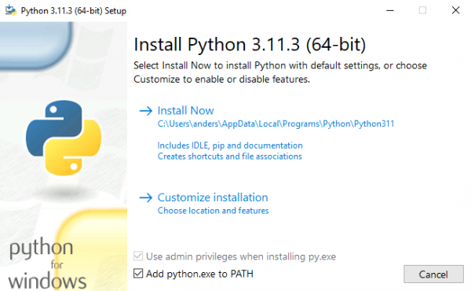
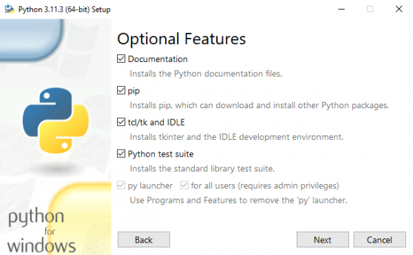
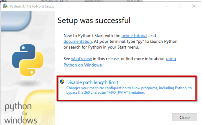
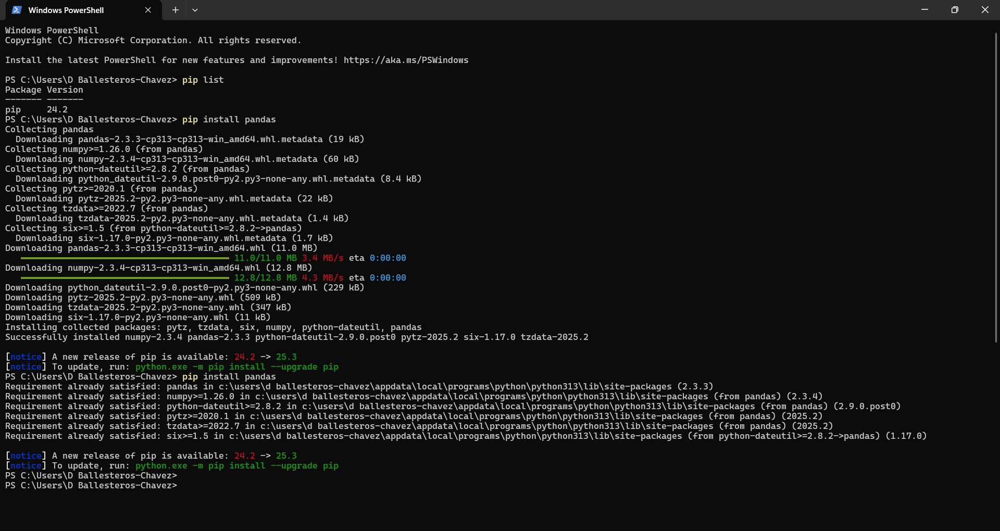

Intro to Python
Table of Contents
- 1. Installing
- 2. How to Install Python in Windows?
- 3. Geting packages….
- 4. Package managers and environments
- 5. How to write code and debugging?
- 6. You can start using it via
- 7. Getting started
- 8. Syntax
- 9. Data Types
- 10. Functions
- 11. Python Conditions and If statements
- 12. Python For Loops
- 13. The while Loop
- 14. Lists and Tuples
- 15. Some list operations
- 16. List Comprehension
- 17. Dictionary in Python
- 18. Sets
- 19. Comparison table
- 20. The sentence of match-case
- 21. Using if, elif, else
- 22. Using dictionaries
- 23. Classes in Python
- 24. Modules/Packages/Libraries
- 25. The Math module
- 26. A GUI calculator
- 27. A simple Python script to count and rank the frequency of words in a text file
- 28. Reading Files
- 29. HTML template
- 30. Plots
- 31. What is next?
- 32. Video resources:
1. Installing
Installing Python is generally easy (they say).
- Python is already installed in many Linux and UNIX distributions.
- Even some Windows computers (notably those from HP) now come with Python already installed.
- If you do need to install Python in a Windows machine you can find a few notes on the BeginnersGuide/Download wiki page.
2. How to Install Python in Windows?
- Visit the official page for Python https://www.python.org//downloads/ on the Windows operating system. Locate a reliable version of Python 3
- Windows installer (64-bit) or
- Windows installer (32-bit)
- Double-click to launch the Python installer-3.11.3-amd64.exe (or the current stable version)
- Choose the option to Install the launcher for all users by checking the corresponding checkbox.
- Enable users to run Python from the command line by checking the Add python.exe to PATH checkbox.




- Verify the installation: python –version
More details in
3. Geting packages….
Another painful experience……
A Python package is a collection of modules, which, in turn, are essentially Python scripts that contain published functionality. There are Python packages for data input, data analysis, data visualisation, etc. Each package offers a unique tool-set and may have its own unique syntax rules.
Using pip in a terminal:
pip install package_name

4. Package managers and environments
Mamba is an open-source, cross-platform, language-agnostic package manager and environment management system that allows you to quickly install, run, and update packages within your work environment(s).
- Package management software:
- Conda
- Mamba
mamba env list mamba enable myenv mamba install package
- It is a good idea to create new environments for different projects because since Python is open source, new versions of the tools are released very frequently.
- Isolated environments help guarantee that your script will use the same versions of packages and libraries and should run the same as you expect it to.
- A good practice to NOT modify your base environment.
5. How to write code and debugging?
- emacs, vim
- Notepad, notepad++
- One can also use an Online IDE
- install an IDE, e.g., pycharm
6. You can start using it via
7. Getting started
print('Hello, world!')
8. Syntax
- Logical Operators
not,or,and(these are in correspondence with!,||and&&in other languages)- Indentation
- Indentation in Python is very important and it indicate a block of code. Indentation in Python is a must, it is not optional.
- Multi-Line Statements
- In order to indicate that a given instruction will continue in the next line, the backslash character
\is used. - Comments 1
- One way to specify commented lines is to use a triple quote to start of the string and at the end of the string
'''commented string'''. - Comments 2
- Begin with the hashtag
#and a space. The hash character tells the interpreter to ignore the rest of the line of code. - Variables
- Variables do not need to be declared with any particular type, and can even change type after they have been set. A variable is created the moment you first assign a value to it. To assign a value we use the equal symbol
=. - Reserved names
- Python has a set of keywords that are reserved words that cannot be used as variable names, function names, or any other identifiers
| and | continue | finally |
| as | def | for |
| assert | del | from |
| async | elif | global |
| await | else | if |
| break | except | import |
| class | False | in |
9. Data Types
| Example | Data Type |
|---|---|
| x = "Hello World" | str |
| x = 20 | int |
| x = 20.5 | float |
| x = 1j | complex |
| x = ["apple", "banana", "cherry"] | list |
| x = ("apple", "banana", "cherry") | tuple |
| x = range(6) | range |
| x = {"name" : "John", "age" : 36} | dict |
| x = {"apple", "banana", "cherry"} | set |
| x = frozenset({"apple", "banana", "cherry"}) | frozenset |
| x = True | bool |
| x = b"Hello" | bytes |
| x = bytearray(5) | bytearray |
| x = memoryview(bytes(5)) | memoryview |
| x = None | NoneType |
Integer
print(4) print(type(4))
Float
print(4/7.5) print(type(4/7.5))
Boolean
print(True) print(type(True))
Complex
print(4+5j) print(type(4+5j))
String
print("Hola")
print(type("Hola"))
List
print([1,2,3,4,5]) print(type([1,2,3,4,5]))
Dictionary
print({"a": 1, "b": 2})
print(type({"a": 1, "b": 2}))
Tuples
print(("A",True,7))
print(type(("A",True,7)))
Set
print(set([1,2,3,4,5,4,3,2,1])) print(type(set([1,2,3,4,5,4,3,2,1])))
What functions are associated to a given class?
print(dir(int)) print(dir(list))
['__abs__', '__add__', '__and__', '__bool__', '__ceil__', '__class__', '__delattr__', '__dir__', '__divmod__', '__doc__', '__eq__', '__float__', '__floor__', '__floordiv__', '__format__', '__ge__', '__getattribute__', '__getnewargs__', '__getstate__', '__gt__', '__hash__', '__index__', '__init__', '__init_subclass__', '__int__', '__invert__', '__le__', '__lshift__', '__lt__', '__mod__', '__mul__', '__ne__', '__neg__', '__new__', '__or__', '__pos__', '__pow__', '__radd__', '__rand__', '__rdivmod__', '__reduce__', '__reduce_ex__', '__repr__', '__rfloordiv__', '__rlshift__', '__rmod__', '__rmul__', '__ror__', '__round__', '__rpow__', '__rrshift__', '__rshift__', '__rsub__', '__rtruediv__', '__rxor__', '__setattr__', '__sizeof__', '__str__', '__sub__', '__subclasshook__', '__truediv__', '__trunc__', '__xor__', 'as_integer_ratio', 'bit_count', 'bit_length', 'conjugate', 'denominator', 'from_bytes', 'imag', 'numerator', 'real', 'to_bytes'] ['__add__', '__class__', '__class_getitem__', '__contains__', '__delattr__', '__delitem__', '__dir__', '__doc__', '__eq__', '__format__', '__ge__', '__getattribute__', '__getitem__', '__getstate__', '__gt__', '__hash__', '__iadd__', '__imul__', '__init__', '__init_subclass__', '__iter__', '__le__', '__len__', '__lt__', '__mul__', '__ne__', '__new__', '__reduce__', '__reduce_ex__', '__repr__', '__reversed__', '__rmul__', '__setattr__', '__setitem__', '__sizeof__', '__str__', '__subclasshook__', 'append', 'clear', 'copy', 'count', 'extend', 'index', 'insert', 'pop', 'remove', 'reverse', 'sort']
10. Functions
- In python functions are defined using
def. Another common notation is using thelambdasyntax. - The returned value of the function is specified using
return. - The parameter
*argsadmits a tuple as arguments for the function. - The parameter
**kwargsadmists a dictionary as arguments for the function.
Some Classic examples:
10.1. Addition of two numbers
def suma(x, y=5):
return x + y
print(suma(6)) # Notice that the value of y is taken by default as 5
print(suma(6,4))
11 10
10.2. Addtion using *args
def suma(*args):
result = 0
for num in args:
result = (result + num)
return result
print(suma(1,2,4,7))
14
10.3. Addition using **kwargs
**kwargs allows us to pass any number of keyword arguments (arguments in the form key=value). These arguments are collected into a dictionary, where:
- Keys = argument names
- Values = argument values
def suma(**kwargs):
result = 0
for key, value in kwargs.items():
result = (result + value)
return resultado
print(suma(x=1,y=2,z=4,variable4=7))
14
10.4. Addition using lambda
suma = lambda x, y=2: x + y print(suma(4)) print(suma(4,6))
6 10
10.5. Another example
We can also combine *args and **kwargs in the same function. This way, the function can accept both positional and keyword arguments at once.
def student_info(*args, **kwargs):
print("Subjects:", args) # Positional arguments
print("Details:", kwargs) # Keyword arguments
# Passing subjects as *args and details as **kwargs
student_info("Math", "Science", "English", Name="Alice", Age=20, City="New York")
Subjects: ('Math', 'Science', 'English')
Details: {'Name': 'Alice', 'Age': 20, 'City': 'New York'}
11. Python Conditions and If statements
Name = "Peter"
if Name == "Daniel":
print("The user is Daniel")
else:
print("You are not he user I am looking for")
You are not he user I am looking for
Name = "Manuel"
if Name == "Juan":
print( Name, "is not Daniel nor Manuel")
elif Name == "Manuel":
print(Name, "is not Daniel nor Juan")
else:
print("El usuario es:", Name)
Manuel is not Daniel nor Juan
12. Python For Loops
list = ["A", "B", "a", "b", "c", "d"]
for i in list:
print(i)
A B a b c d
string = "User"
for i in string:
print(i)
U s e r
13. The while Loop
i = 0
while i < 10:
print("Index number", i)
i += 1
Index number 0 Index number 1 Index number 2 Index number 3 Index number 4 Index number 5 Index number 6 Index number 7 Index number 8 Index number 9
14. Lists and Tuples
Here you will find more information
14.1. List
List is a collection which is ordered and changeable. Allows duplicate members.
mylist = ["abc", 522, 3/2] print(mylist) # Access an element print(mylist[0])
['abc', 522, 1.5] abc
# Usage of negative index print(mylist[-1])
1.5
# add an element at the end of the list mylist.append(True) print(mylist)
['abc', 522, 1.5, True]
# delete an element del mylist[3] print(mylist)
['abc', 522, 1.5]
# replace a value in the list mylist[0] = "computer" print(mylist)
['computer', 522, 1.5]
# Show elements from 0 to 2 excluding the last one print(mylist[0:2] )
['computer', 522]
# nested listsyes mylist_list = [mylist, [True, 42]] print(mylist_list)
[['computer', 522, 1.5], [True, 42]]
# Access elements in nested lists print(mylist_list[1][0])
True
14.2. Tuples
A tuple is a collection which is ordered and unchangeable. It also allows duplicate members.
mytuple = ("abc", 522, 3/2)
# Print the first element of the tuple (index starts with 0)
print(mytuple[0])
abc
# One can also use negative index print(mytuple[-1])
1.5
# It is nos possible to add or delete elements in a tuple (unchangeable) del mytuple[0]
Traceback (most recent call last):
File "<stdin>", line 1, in <module>
File "/tmp/babel-ig8N8b/python-VxBVuo", line 2, in <module>
del mytuple[0]
~~~~~^^^
TypeError: 'tuple' object doesn't support item deletion
# Is it not possible to modify the content of an entry tupla[0] = "computer"
Traceback (most recent call last):
File "<stdin>", line 1, in <module>
File "/tmp/babel-ig8N8b/python-OFomB4", line 2, in <module>
mytuple[0] = "computer"
~~~~~^^^
TypeError: 'tuple' object does not support item assignment
# It is possible to have nested tuples tuple_nested = (mytuple, (True, 3.1415)) print(tuple_nested)
(('abc', 522, 1.5), (True, 3.1415))
# This is also a tuple, although it is recommended to use the round brackets. 1, 2, 3, "abc"
1 2 3 abc
14.3. From tuples to list and viceversa
To convert between tuples and lists use the list() and tuple() functions:
li = list(tu) tu = tuple(li)
15. Some list operations
x = [1,2,3,4,5] dir(x) x.reverse() x.sort() x.append(7) x.remove(1)
16. List Comprehension
List comprehension offers a shorter syntax when you want to create a new list based on the values of an existing list.
Here an example using the function range()
# Using range(n), we can create a list with items from 0 up to (n-1)
x= range(5)
print(x)
for i in x:
print(i)
range(0, 5) 0 1 2 3 4
x = [i*(i+1) for i in range(5)] print(x)
[0, 2, 6, 12, 20]
lista = [(i, i + 2) for i in range(5)] print(lista)
[(0, 2), (1, 3), (2, 4), (3, 5), (4, 6)]
A very instersting example:
fruits = ["apple", "banana", "cherry", "kiwi", "mango"] newlist = [x for x in fruits if "a" in x] print(newlist)
['apple', 'banana', 'mango']
17. Dictionary in Python
More information on Dictionaries can be fund here: https://docs.python.org/3/tutorial/datastructures.html#dictionaries
- Dictionaries are used to store data values in
key:valuepairs. - A dictionary is a collection which is ordered, changeable and do not allow duplicates.
- Dictionaries are written with curly brackets
{ }, and have keys and values:
# A dictionary may have different values for each key, and these values may as well be lists.
onedict = {
"brand": "Ford",
"model": "Mustang",
"year": 1964
}
print(onedict)
print(onedict["brand"])
{'brand': 'Ford', 'model': 'Mustang', 'year': 1964}
Ford
It is also possible to use the dict() constructor to make a dictionary.
otherdict = dict(name = "John", age = 36, country = "Norway") print(otherdict)
{'name': 'John', 'age': 36, 'country': 'Norway'}
It is also possible to know the length of the dictionary
print(len(onedict))
3
print(dir(onedict))
['__class__', '__class_getitem__', '__contains__', '__delattr__', '__delitem__', '__dir__', '__doc__', '__eq__', '__format__', '__ge__', '__getattribute__', '__getitem__', '__getstate__', '__gt__', '__hash__', '__init__', '__init_subclass__', '__ior__', '__iter__', '__le__', '__len__', '__lt__', '__ne__', '__new__', '__or__', '__reduce__', '__reduce_ex__', '__repr__', '__reversed__', '__ror__', '__setattr__', '__setitem__', '__sizeof__', '__str__', '__subclasshook__', 'clear', 'copy', 'fromkeys', 'get', 'items', 'keys', 'pop', 'popitem', 'setdefault', 'update', 'values']
Dictionaries are mutable
# Insert a new value onedict["year"] = 2025 print(onedict)
{'brand': 'Ford', 'model': 'Mustang', 'year': 2025}
You can also update a dictionary
onedict.update({'type': "car"})
print(onedict)
{'brand': 'Ford', 'model': 'Mustang', 'year': 2025, 'type': 'car'}
A dictionary admits entries where the value is a list (or a tuple)
onedict.update({'generation': [1,2,3,4]})
print(onedict)
{'brand': 'Ford', 'model': 'Mustang', 'year': 2025, 'type': 'car', 'generation': [1, 2, 3, 4]}
A dictionary can have as a key an (unmutable) tuple but it cannot have a (mutable) list.
onedict.update({("Atuple", 440): 42})
print(onedict)
{'brand': 'Ford', 'model': 'Mustang', 'year': 2025, 'type': 'car', 'generation': [1, 2, 3, 4], ('Atuple', 440): 42}
onedict.update({['Alist', 440]: 'Impossible'})
18. Sets
More information on Dictionaries can be fund here: https://docs.python.org/3/tutorial/datastructures.html#sets
- Sets are used to store multiple items in a single variable.
- Set is one of 4 built-in data types in Python used to store collections of data, the other 3 are List, Tuple, and Dictionary, all with different qualities and usage.
- A set is a collection which is unordered and unindexed.
- Sets are written with curly brackets
{}or with theset()constructor.
# First mutable set collection1 = set(["a", "b", "a"]) print(collection1)
{'a', 'b'}
# Second mutable set collection2 = set(["a", "b", "c", "d"]) print(collection2)
{'c', 'a', 'b', 'd'}
# Intersection print(collection1 & collection2 )
{'a', 'b'}
# Union print(collection1 | collection2 )
{'a', 'b', 'c', 'd'}
# Set difference (1) print(collection1 - collection2 )
set()
# Set difference (2) print(collection2 - collection1 )
{'c', 'd'}
# Symmetric Difference print(collection1 ^ collection2 )
{'c', 'd'}
One can also define unmutable sets using frozenset(). You can findout more by running
help(frozenset)
19. Comparison table
Difference between List, Tuple, Set, and Dictionary
The following table shows the difference between various Python built-in data structures.
| List | Tuple | Set | Dictionary |
|---|---|---|---|
A list is a non-homogeneous data structure that stores the elements in columns of a single row or multiple rows. | A Tuple is a non-homogeneous data structure that stores elements in columns of a single row or multiple rows. | The set data structure is non-homogeneous but stores the elements in a single row. | A dictionary is also a non-homogeneous data structure that stores key-value pairs. |
The list can be represented by [ ] | A tuple can be represented by ( ) | The set can be represented by { } | The dictionary can be represented by { } |
The list allows duplicate elements | Tuple allows duplicate elements | The Set will not allow duplicate elements | The dictionary doesn't allow duplicate keys. |
The list can be nested among all | A tuple can be nested among all | The set can be nested among all | The dictionary can be nested among all |
Example: [1, 2, 3, 4, 5] | Example: (1, 2, 3, 4, 5) | Example: {1, 2, 3, 4, 5} | Example: {1: "a", 2: "b", 3: "c", 4: "d", 5: "e"} |
A list can be created using the list() function | Tuple can be created using the tuple() function. | A set can be created using the set() function | A dictionary can be created using the dict() function. |
A list is mutable i.e we can make any changes in the list. | A tuple is immutable i.e we can not make any changes in the tuple. | A set is mutable i.e we can make any changes in the set, its elements are not duplicated. | A dictionary is mutable, its Keys are not duplicated. |
List is ordered | Tuple is ordered | Set is unordered | Dictionary is ordered (Python 3.7 and above) |
Creating an empty list l=[] | Creating an empty Tuple t=() | Creating a set a=set() | Creating an empty dictionary d={} |
20. The sentence of match-case
x = 10
y = 30
match (x,y):
case (10 ,40): # los atributos "x" e "y" tienen el valor specificado
print("Coordenada 10, 40")
case (10 ,30): # los atributos "x" e "y" tienen el valor specificado
print("Coordenada 10, 30")
case _: # ninguna condición cumplida (default)
print("La opción no fue encontrada")
Coordenada 10, 30
21. Using if, elif, else
def calculator(operation, a, b):
if operation == 'sum':
return a + b
elif operation == 'rest':
return a - b
elif operation == 'mult':
return a * b
elif operation == 'div':
return a / b
else:
return None
print(calculator('sum',3,7))
10
22. Using dictionaries
def calculate(operation, a, b):
return {
'sum': lambda: a + b,
'rest': lambda: a - b,
'mult': lambda: a * b,
'div': lambda: a/b
}.get(operation, lambda: None)()
print(calculate('div',3,4))
0.75
Note about the Syntax:
| dictionary.get(keyname, value) | |
|---|---|
| Parameter | Description |
| keyname | Required. The keyname of the item you want to return the value from |
| value | Optional. A value to return if the specified key does not exist. |
| Default value | None |
23. Classes in Python
More information in https://docs.python.org/3/tutorial/classes.html
- Classes provide a means of bundling data and functionality together.
- Python’s class mechanism adds classes with a minimum of new syntax and semantics (if compared with C++ for example).
- Creating a new class creates a new type of object, allowing new instances of that type to be made.
- Each class instance can have attributes attached to it for maintaining its state.
- Class instances can also have methods (defined by its class) for modifying its state.
23.1. Example of a Class
class Persona(): # We will create objects called Persona
def __init__(self, name, age):
self.name = name # Create an attribute called name
self.age = age # Create an attribute called age
def show_age(self): # This function should have a parameter assigned, generally the parameter self
print(self.age) # The function prints the value of age for the given Persona
def modify_age(self, age): # This is another function called modify_age wit two parameters.
if 0 > age < 150: # A small validation of the information
return False
else: # If age is within the range 0-150, then the value is modified
self.age = age # The new value is assigned
23.2. Working with this calss
p = Persona('Daniel', 29)
print(p.name)
Daniel
p.name = "Danilo" print(p.name)
Danilo
p.show_age() p.modify_age(41) p.show_age()
29 41
24. Modules/Packages/Libraries
For the purpose of this document, we do not make a distinction between the concepts of modules, packages or libraries.
You can consult https://docs.python.org/3/glossary.html for more details.
There are many properties that can be added to the language by importing modules (also called packages). These are sets of functions and classes designed to perform tasks usually specific to Python.
os: The os module provides functions for interacting with the operating system.shutil: For file management tasks.glob: Provides a function for creating lists of files from wildcard searches in folders.math: Provides access to floating-point math functions.random: For performing random selections.statistics: Used for basic statistics, such as mean, median, variance, etc.datetime: For handling dates and times.numpy: NumPy, also known as Numerical Python, is ideal for working with arrays instead of lists.pandas: For analyzing, cleaning and manipulating large tables with data.
import statistics as stat datos = [4.75, 3.55, 1.25, 0.5, 0.35, 1.85, 5.5] print(stat.mean(datos)) print(stat.median(datos)) print(stat.variance(datos))
2.5357142857142856 1.85 4.293928571428571
25. The Math module
help('math')
Help on built-in module math:
NAME
math
DESCRIPTION
This module provides access to the mathematical functions
defined by the C standard.
FUNCTIONS
acos(x, /)
Return the arc cosine (measured in radians) of x.
The result is between 0 and pi.
acosh(x, /)
Return the inverse hyperbolic cosine of x.
asin(x, /)
Return the arc sine (measured in radians) of x.
The result is between -pi/2 and pi/2.
asinh(x, /)
Return the inverse hyperbolic sine of x.
atan(x, /)
Return the arc tangent (measured in radians) of x.
The result is between -pi/2 and pi/2.
atan2(y, x, /)
Return the arc tangent (measured in radians) of y/x.
Unlike atan(y/x), the signs of both x and y are considered.
atanh(x, /)
Return the inverse hyperbolic tangent of x.
cbrt(x, /)
Return the cube root of x.
ceil(x, /)
Return the ceiling of x as an Integral.
This is the smallest integer >= x.
comb(n, k, /)
Number of ways to choose k items from n items without repetition and without order.
Evaluates to n! / (k! * (n - k)!) when k <= n and evaluates
to zero when k > n.
Also called the binomial coefficient because it is equivalent
to the coefficient of k-th term in polynomial expansion of the
expression (1 + x)**n.
Raises TypeError if either of the arguments are not integers.
Raises ValueError if either of the arguments are negative.
copysign(x, y, /)
Return a float with the magnitude (absolute value) of x but the sign of y.
On platforms that support signed zeros, copysign(1.0, -0.0)
returns -1.0.
cos(x, /)
Return the cosine of x (measured in radians).
cosh(x, /)
Return the hyperbolic cosine of x.
degrees(x, /)
Convert angle x from radians to degrees.
dist(p, q, /)
Return the Euclidean distance between two points p and q.
The points should be specified as sequences (or iterables) of
coordinates. Both inputs must have the same dimension.
Roughly equivalent to:
sqrt(sum((px - qx) ** 2.0 for px, qx in zip(p, q)))
erf(x, /)
Error function at x.
erfc(x, /)
Complementary error function at x.
exp(x, /)
Return e raised to the power of x.
exp2(x, /)
Return 2 raised to the power of x.
expm1(x, /)
Return exp(x)-1.
This function avoids the loss of precision involved in the direct evaluation of exp(x)-1 for small x.
fabs(x, /)
Return the absolute value of the float x.
factorial(n, /)
Find n!.
floor(x, /)
Return the floor of x as an Integral.
This is the largest integer <= x.
fma(x, y, z, /)
Fused multiply-add operation.
Compute (x * y) + z with a single round.
fmod(x, y, /)
Return fmod(x, y), according to platform C.
x % y may differ.
frexp(x, /)
Return the mantissa and exponent of x, as pair (m, e).
m is a float and e is an int, such that x = m * 2.**e.
If x is 0, m and e are both 0. Else 0.5 <= abs(m) < 1.0.
fsum(seq, /)
Return an accurate floating-point sum of values in the iterable seq.
Assumes IEEE-754 floating-point arithmetic.
gamma(x, /)
Gamma function at x.
gcd(*integers)
Greatest Common Divisor.
hypot(...)
hypot(*coordinates) -> value
Multidimensional Euclidean distance from the origin to a point.
Roughly equivalent to:
sqrt(sum(x**2 for x in coordinates))
For a two dimensional point (x, y), gives the hypotenuse
using the Pythagorean theorem: sqrt(x*x + y*y).
For example, the hypotenuse of a 3/4/5 right triangle is:
>>> hypot(3.0, 4.0)
5.0
isclose(a, b, *, rel_tol=1e-09, abs_tol=0.0)
Determine whether two floating-point numbers are close in value.
rel_tol
maximum difference for being considered "close", relative to the
magnitude of the input values
abs_tol
maximum difference for being considered "close", regardless of the
magnitude of the input values
Return True if a is close in value to b, and False otherwise.
For the values to be considered close, the difference between them
must be smaller than at least one of the tolerances.
-inf, inf and NaN behave similarly to the IEEE 754 Standard. That
is, NaN is not close to anything, even itself. inf and -inf are
only close to themselves.
isfinite(x, /)
Return True if x is neither an infinity nor a NaN, and False otherwise.
isinf(x, /)
Return True if x is a positive or negative infinity, and False otherwise.
isnan(x, /)
Return True if x is a NaN (not a number), and False otherwise.
isqrt(n, /)
Return the integer part of the square root of the input.
lcm(*integers)
Least Common Multiple.
ldexp(x, i, /)
Return x * (2**i).
This is essentially the inverse of frexp().
lgamma(x, /)
Natural logarithm of absolute value of Gamma function at x.
log(...)
log(x, [base=math.e])
Return the logarithm of x to the given base.
If the base is not specified, returns the natural logarithm (base e) of x.
log10(x, /)
Return the base 10 logarithm of x.
log1p(x, /)
Return the natural logarithm of 1+x (base e).
The result is computed in a way which is accurate for x near zero.
log2(x, /)
Return the base 2 logarithm of x.
modf(x, /)
Return the fractional and integer parts of x.
Both results carry the sign of x and are floats.
nextafter(x, y, /, *, steps=None)
Return the floating-point value the given number of steps after x towards y.
If steps is not specified or is None, it defaults to 1.
Raises a TypeError, if x or y is not a double, or if steps is not an integer.
Raises ValueError if steps is negative.
perm(n, k=None, /)
Number of ways to choose k items from n items without repetition and with order.
Evaluates to n! / (n - k)! when k <= n and evaluates
to zero when k > n.
If k is not specified or is None, then k defaults to n
and the function returns n!.
Raises TypeError if either of the arguments are not integers.
Raises ValueError if either of the arguments are negative.
pow(x, y, /)
Return x**y (x to the power of y).
prod(iterable, /, *, start=1)
Calculate the product of all the elements in the input iterable.
The default start value for the product is 1.
When the iterable is empty, return the start value. This function is
intended specifically for use with numeric values and may reject
non-numeric types.
radians(x, /)
Convert angle x from degrees to radians.
remainder(x, y, /)
Difference between x and the closest integer multiple of y.
Return x - n*y where n*y is the closest integer multiple of y.
In the case where x is exactly halfway between two multiples of
y, the nearest even value of n is used. The result is always exact.
sin(x, /)
Return the sine of x (measured in radians).
sinh(x, /)
Return the hyperbolic sine of x.
sqrt(x, /)
Return the square root of x.
sumprod(p, q, /)
Return the sum of products of values from two iterables p and q.
Roughly equivalent to:
sum(itertools.starmap(operator.mul, zip(p, q, strict=True)))
For float and mixed int/float inputs, the intermediate products
and sums are computed with extended precision.
tan(x, /)
Return the tangent of x (measured in radians).
tanh(x, /)
Return the hyperbolic tangent of x.
trunc(x, /)
Truncates the Real x to the nearest Integral toward 0.
Uses the __trunc__ magic method.
ulp(x, /)
Return the value of the least significant bit of the float x.
DATA
e = 2.718281828459045
inf = inf
nan = nan
pi = 3.141592653589793
tau = 6.283185307179586
FILE
(built-in)
26. A GUI calculator
As an exercise, we can try to run the following code in our computer.
- Create a
calculator.pyfile. - Open a power shell and run it using
python calculator.py
import tkinter as tk
import tkinter.messagebox
from tkinter.constants import SUNKEN
win = tk.Tk()
win.title('Calculator')
frame = tk.Frame(win, bg="skyblue", padx=10)
frame.pack()
entry = tk.Entry(frame, relief=SUNKEN, borderwidth=3, width=30)
entry.grid(row=0, column=0, columnspan=3, ipady=2, pady=2)
def click(num):
entry.insert(tk.END, num)
def equal():
try:
res = str(eval(entry.get()))
entry.delete(0, tk.END)
entry.insert(0, res)
except:
tk.messagebox.showinfo("Error", "Syntax Error")
def clear():
entry.delete(0, tk.END)
buttons = [
('1', 1, 0), ('2', 1, 1), ('3', 1, 2),
('4', 2, 0), ('5', 2, 1), ('6', 2, 2),
('7', 3, 0), ('8', 3, 1), ('9', 3, 2),
('0', 4, 1), ('+', 5, 0), ('-', 5, 1),
('*', 5, 2), ('/', 6, 0)
]
for txt, r, c in buttons:
tk.Button(frame, text=txt, padx=15, pady=5, width=3, command=lambda t=txt: click(t)).grid(row=r, column=c, pady=2)
tk.Button(frame, text="Clear", padx=15, pady=5, width=12, command=clear).grid(row=6, column=1, columnspan=2, pady=2)
tk.Button(frame, text="=", padx=15, pady=5, width=9, command=equal).grid(row=7, column=0, columnspan=3, pady=2)
win.mainloop()
27. A simple Python script to count and rank the frequency of words in a text file
- Download the following novel here, and save it as
mobi-dick.txt. - Create the countwords.py program below.
- Run in your favourite way. e.g.
python3 ./count_words.py.
# Relative path to a .txt file
fileToRank = "moby-dick.txt"
# Relative path to a .txt file to create, with frequency counts
rankingFile = fileToRank.replace(".txt", "--words_counted.txt")
# Open the file in read mode
text = open(fileToRank, "r")
# Create an empty dictionary
d = dict()
# Loop through each line of the file
for line in text:
# Remove the leading spaces and newline character
line = line.strip()
# Convert the characters in line to
# lowercase to avoid case mismatch
line = line.lower()
# Split the line into words
words = line.split(" ")
# Iterate over each word in line
for word in words:
if word == "":
continue
# Check if the word is already in dictionary
if word in d:
# Increment count of word by 1
d[word] = d[word] + 1
else:
# Add the word to dictionary with count 1
d[word] = 1
# sort the dictionary by the frequency count values, in descender order
sortedDict = {k: v for k, v in sorted(d.items(), key=lambda item: item[1], reverse=True)}
# make a new text file, then write results to that
with open(rankingFile, 'w') as f:
for key in list(sortedDict.keys()):
f.write(f"{key}: {sortedDict[key]}\n")
You can find more information here: https://gist.github.com/arrowtype/1cbddcfe2fac1b0b6c8b547e7f561986
28. Reading Files
Here we have a copy of the iris data set: data
Now we present various ways of reading the csv file.
28.1. Using csv.reader()
import csv
with open('IRIS.csv', mode ='r')as file:
csvFile = csv.reader(file)
for lines in csvFile:
print(lines)
28.2. Using csv.DictReader() class
The DictReader class of csv module works like a regular reader, with the additional feature that it maps the information in the CSV file into a dictionary. The very first line (column names) of the file consists of dictionary keys.
import csv
with open('IRIS.csv', mode ='r') as file:
csvFile = csv.DictReader(file)
for lines in csvFile:
print(lines)
28.3. Using pandas.read_csv() method
import pandas
csvFile = pandas.read_csv('IRIS.csv')
print(csvFile)
29. HTML template
Write the following html file:
<!DOCTYPE html>
<html lang="en">
<head>
<title>My website</title>
</head>
<body>
<div class="container">
<h1> Today is INSERT_TIME</h1>
<p>My first name is: INSERT_NAME, and my second name is very long: INSERT_SURNAME.</p>
</div>
</body>
</html>
Now you can update the content with the following code
# import pandas as pd
import datetime
html = open("mytemplate.html").read()
current_date = datetime.datetime.now().strftime("%B %d, %Y")
VAR1 = "Daniel"
VAR2 = "Ballesteros Chávez"
html = html.replace("INSERT_TIME", current_date)
html = html.replace("INSERT_NAME", VAR1)
html = html.replace("INSERT_SURNAME", VAR2)
with open("index.html", "w") as fp:
fp.write(html)
30. Plots
import matplotlib.pyplot as plt
x = [1, 2, 3, 4, 5]
y = [1, 4, 9, 16, 25]
plt.plot(x, y)
plt.xlabel('X-axis')
plt.ylabel('Y-axis')
plt.title('Simple Plot')
plt.show()
# importing package
import matplotlib.pyplot as plt
# create data
x = ['A', 'B', 'C', 'D']
y1 = [10, 20, 10, 30]
y2 = [20, 25, 15, 25]
# plot bars in stack manner
plt.bar(x, y1, color='y')
plt.bar(x, y2, bottom=y1, color='g')
#Plot titles and labels
plt.xlabel("x-axis name")
plt.ylabel("y-axis name")
plt.legend(["Round 1", "Round 2"])
plt.title("Title")
plt.show()
import pandas
import matplotlib.pyplot as plt
df = pandas.read_csv('./images/IRIS.csv')
# Define color mapping for each species
colors = {'setosa': 'blue', 'versicolor': 'orange', 'virginica': 'green'}
# Plot sepal length vs petal length for each species with different colors
for species, group in df.groupby('Species'):
plt.scatter(group['Sepal.Length'], group['Petal.Length'], color=colors[species], label=species)
# Set axis labels
#plt.xlabel('Sepal.Length')
#plt.ylabel('Petal.Length')
# Show legend
plt.legend()
plt.show()
31. What is next?
32. Video resources:
- Python if name == 'main': Visually Explained https://www.youtube.com/watch?v=KZpYtNtGxSU